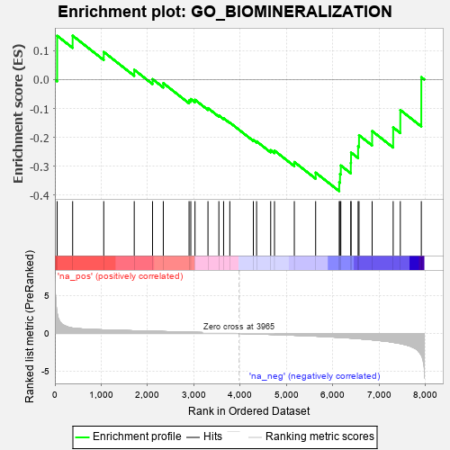
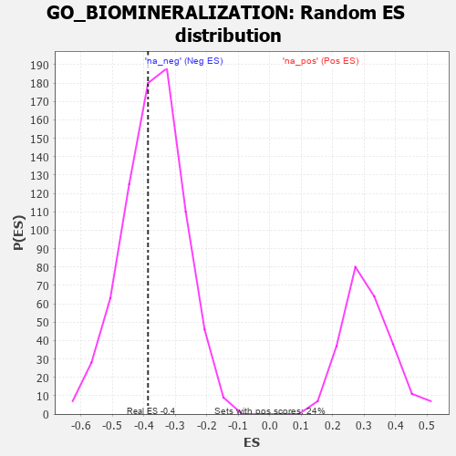

| | | Dataset | 7d |
| Phenotype | NoPhenotypeAvailable |
| Upregulated in class | na_neg |
| GeneSet | GO_BIOMINERALIZATION |
| Enrichment Score (ES) | -0.3861486 |
| Normalized Enrichment Score (NES) | -1.0475308 |
| Nominal p-value | 0.40873015 |
| FDR q-value | 0.8059584 |
| FWER p-Value | 1.0 |
Table: GSEA Results Summary

Fig 1: Enrichment plot: GO_BIOMINERALIZATION
Profile of the Running ES Score & Positions of GeneSet Members on the Rank Ordered List
| PROBE | GENE SYMBOL | GENE_TITLE | RANK IN GENE LIST | RANK METRIC SCORE | RUNNING ES | CORE ENRICHMENT | | 1 | TGFB3 | | | 49 | 2.654 | 0.1514 | No |
| 2 | AXIN2 | | | 383 | 0.713 | 0.1518 | No |
| 3 | MEF2C | | | 1054 | 0.473 | 0.0956 | No |
| 4 | ERCC2 | | | 1712 | 0.354 | 0.0339 | No |
| 5 | BMP7 | | | 2107 | 0.290 | 0.0015 | No |
| 6 | ANO6 | | | 2339 | 0.255 | -0.0125 | No |
| 7 | FGFR2 | | | 2895 | 0.167 | -0.0724 | No |
| 8 | ACVR1 | | | 2932 | 0.161 | -0.0674 | No |
| 9 | WNT4 | | | 3023 | 0.146 | -0.0701 | No |
| 10 | SMAD3 | | | 3303 | 0.105 | -0.0990 | No |
| 11 | NELL1 | | | 3538 | 0.070 | -0.1243 | No |
| 12 | SBDS | | | 3640 | 0.053 | -0.1339 | No |
| 13 | SBNO2 | | | 3774 | 0.032 | -0.1487 | No |
| 14 | WNT11 | | | 4282 | -0.056 | -0.2092 | No |
| 15 | ADRB2 | | | 4352 | -0.068 | -0.2139 | No |
| 16 | FGFR3 | | | 4656 | -0.129 | -0.2444 | No |
| 17 | CNNM4 | | | 4738 | -0.147 | -0.2459 | No |
| 18 | TBX1 | | | 5166 | -0.241 | -0.2853 | No |
| 19 | ROR2 | | | 5626 | -0.353 | -0.3222 | No |
| 20 | IFT80 | | | 6135 | -0.515 | -0.3556 | Yes |
| 21 | ROCK1 | | | 6152 | -0.520 | -0.3267 | Yes |
| 22 | STIM1 | | | 6169 | -0.528 | -0.2974 | Yes |
| 23 | ISG15 | | | 6385 | -0.608 | -0.2884 | Yes |
| 24 | TRPM4 | | | 6390 | -0.612 | -0.2526 | Yes |
| 25 | DDR2 | | | 6542 | -0.681 | -0.2312 | Yes |
| 26 | OTOP1 | | | 6562 | -0.690 | -0.1926 | Yes |
| 27 | PTH1R | | | 6845 | -0.839 | -0.1783 | Yes |
| 28 | MSX2 | | | 7299 | -1.171 | -0.1658 | Yes |
| 29 | MMP13 | | | 7453 | -1.340 | -0.1055 | Yes |
| 30 | FBN2 | | | 7906 | -2.873 | 0.0082 | Yes |
Table: GSEA details [plain text format]

Fig 2: GO_BIOMINERALIZATION: Random ES distribution
Gene set null distribution of ES for GO_BIOMINERALIZATION